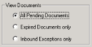
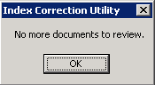

Scroll documents by using the Navigate Documents buttons in the ICU window. The buttons provide access to the first document, the previous or next document, or the last document.
The Index Correction Utility automatically displays a document image only if Immediate View on the View menu is enabled. The system opens a viewer window (if one is not already open) and displays the document image that corresponds to the current document information.
Note: When you display documents in conjunction with the Index Correction Utility, not all viewer functions are available. Functions that are not available include adding deficiencies and assignments; sticky notes; and viewing documents across encounters.
Scroll documents by using the Navigate Documents buttons in the ICU window. The buttons provide access to the first document, the previous or next document, or the last document.
Navigate document pages by using the navigation buttons in the viewer window. If the document has only one page, the navigation buttons are disabled. For more information on using the image viewer window, see viewer online help.
This task provides access to document information submitted since you launched ICU or last refreshed the view. This function is available for all view options.
The Index Correction Utility checks for available information according to the current view option and displays document information.
Note: If no documents exist, the system prompts you to either remain in the current view mode or to exit the application.
You can view information for all pending documents in the CAB_HOLD table that have not been uploaded (both expired and non-expired, including inbound exceptions).

If pending documents exist, the system displays information for the first available pending document. If the auto-display feature is ON, the system also displays the corresponding document image in the viewer window.
Note: If no pending documents exist, the system prompts you to either remain in the current view mode or to exit the application.
| • | To scroll documents: In the ICU window, click the navigation buttons to display the first, next, previous, or last document. If no more documents exist, the system updates the window status bar: The system also displays a notification message.  Click OK to close the message box and return to the ICU window. |
| • | To scroll pages: In the viewer window, click the navigation buttons to display the first, next, previous, or last page. If the document has only one page, the navigation buttons are disabled. For more information on using the viewer window, see viewer online help. |